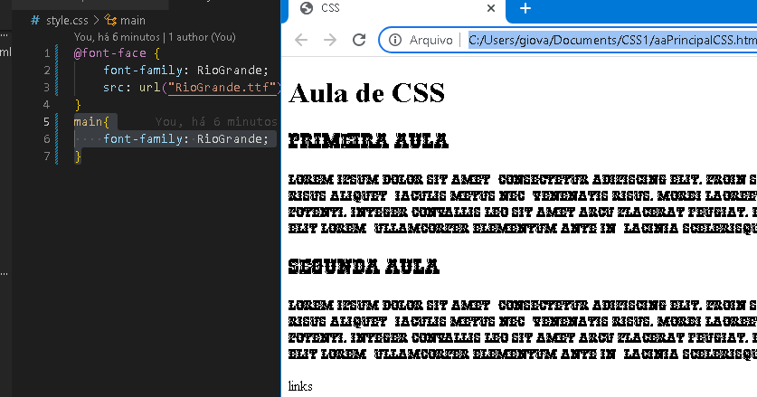
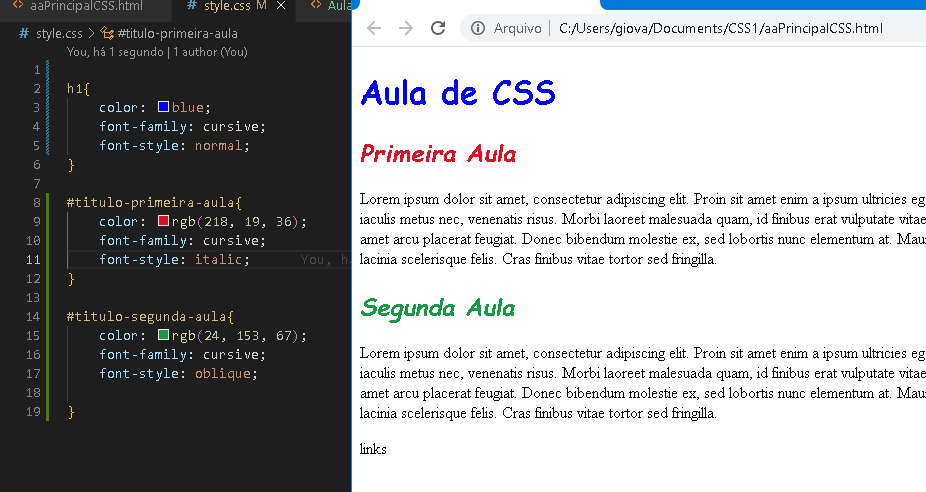
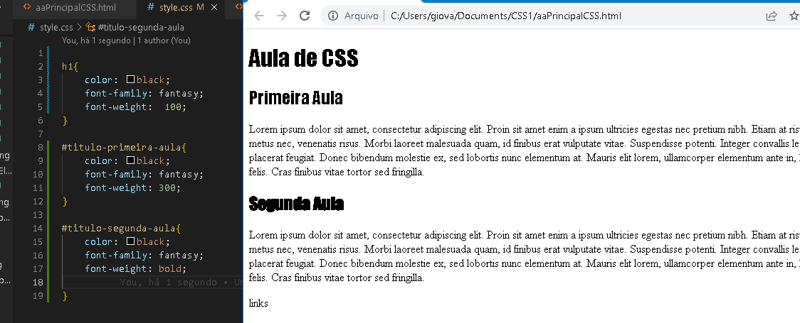
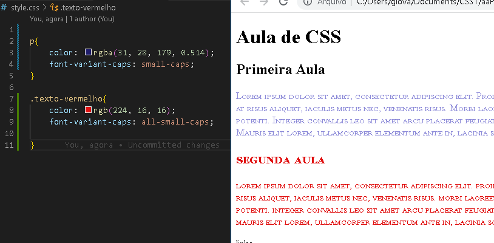

Font Family, é a fonte que o navegador vai renderizar, o tipo de fonte
Tem alguns padrões pré definidos
Pode usar fontes diferentes, mas para isso deve adicionar ao projeto
O código:
main{
-----font-family: cursive
-}
Font
Font Family
Como usar uma font diferente
Precisa baixar a font, salvar junto com os aquivos da página que está criando
Vai ter que cria uma nova Family Font, passando o nome e o local que está a fonte baixada.
ALERTA = é preciso colocar tambem, uma fonte reserva, caso essa que vc está adicionando nao abra no navegador.
O código para adicionar a fonte baixada:
@font-face {
-----------font-family: RioGrande;
-----------src: url("RioGrande.ttf");
}
---------------------------------------------------------------------------------
Aqui você adiciona a fonte, com uma outra reserva , caso a principal nao funcione tem outra:
main{
-----font-family: 'RioGrande', cursive ;
}
Como fica na página:
Font style
Se será itálico ou não, a letra cai um pouco para o lado
Oblique = que deixa ela para outra direção, algumas fontes não possui essa função.
No exemplo abaixo, está tudo com font "cursive", mudando somento o "style", o estilo dela.
O código seria assim:
h1{
-----color: blue;
-----font-family: cursive;
-----font-style: normal;
}
#titulo-primeira-aula{
----color: rgb(218, 19, 36);
----font-family: cursive;
----font-style: italic;
}
#titulo-segunda-aula{
----color: rgb(24, 153, 67);
----font-family: cursive;
----font-style: oblique;
}
Como fica na página:
Font width
É mais conhecida como "negrito", defini a grossura das letras.
De acordo, com a fonte do texto, terá suas opções para modificar o "negrito"
No exemplo abaixo, está tudo com font "fantasy", mudando somento o "weigth".
O código seria assim:
h1{
-----color: black;
-----font-family: fantasy;
-----font-weigth: 100;
}
#titulo-primeira-aula{
----color: black;
----font-family: fantasy;
----font-weigth: 300;
}
#titulo-segunda-aula{
----color: blcak;
----font-family: fantasy;
----font-weigth: bold;
}
Como fica na página:
Font Variant Caps
Letras maiúsculas e minúsculas.
Small cap = pega a Primeira letra do texto e deixa ela maiúscula.
O código seria assim:
p{
-----color: rgba(31, 28, 179, 0.514);
-----font-variant-caps: small-caps;
}
All small cap = deixa todo texto com a letra minúscula .
O código seria assim:
p{
-----color: rgba(31, 28, 179, 0.514);
-----font-variant-caps: all-small-caps;
}
Como fica na página:
Font Size
Tamanho da font da letra, de cada caractere.
O mais ideal para se usar é o "rem".
O código seria assim:
p{
-----color: rgba(31, 28, 179, 0.514);
-----font-variant-caps: small-caps;
-----font-size: 1.5 rem ;
}
All small cap = deixa todo texto com a letra minúscula .
O código seria assim:
p{
-----color: rgba(31, 28, 179, 0.514);
-----font-variant-caps: all-small-caps;
-----font-size: 2.0 rem;
}